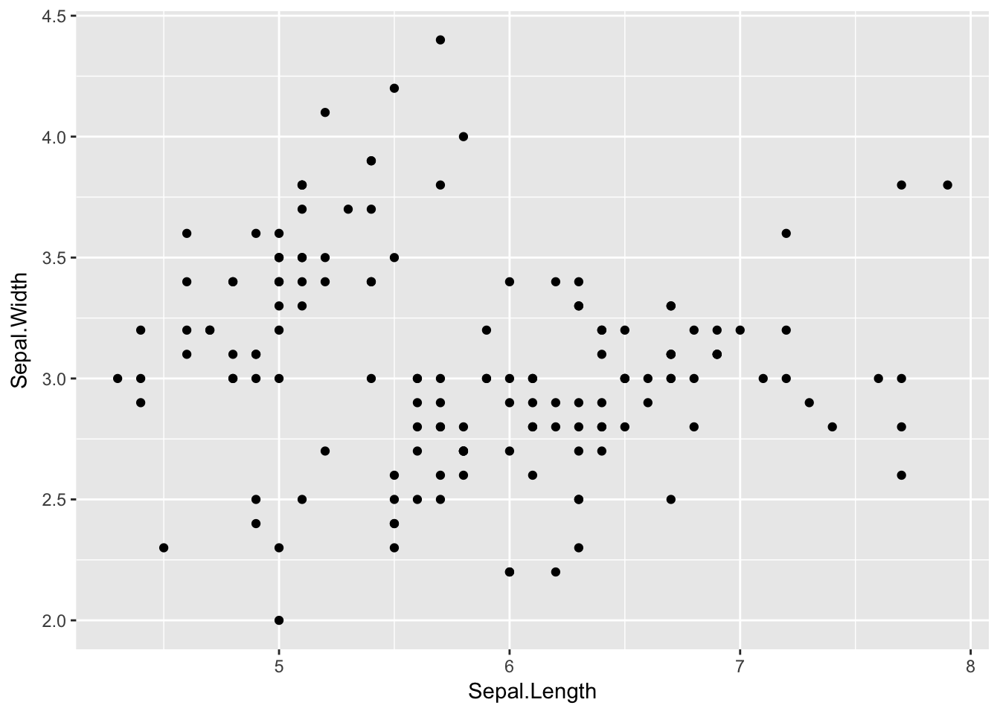
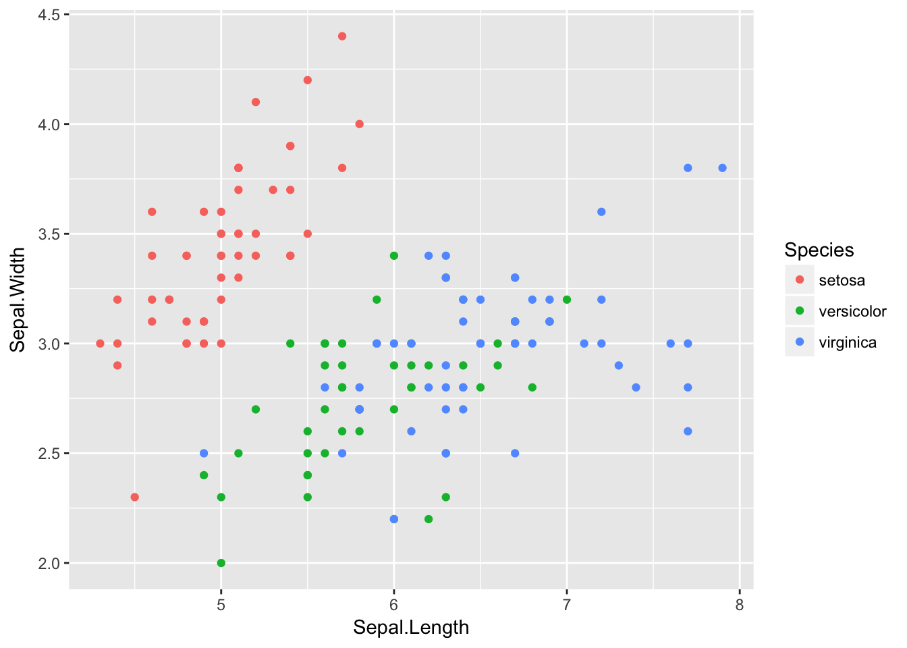
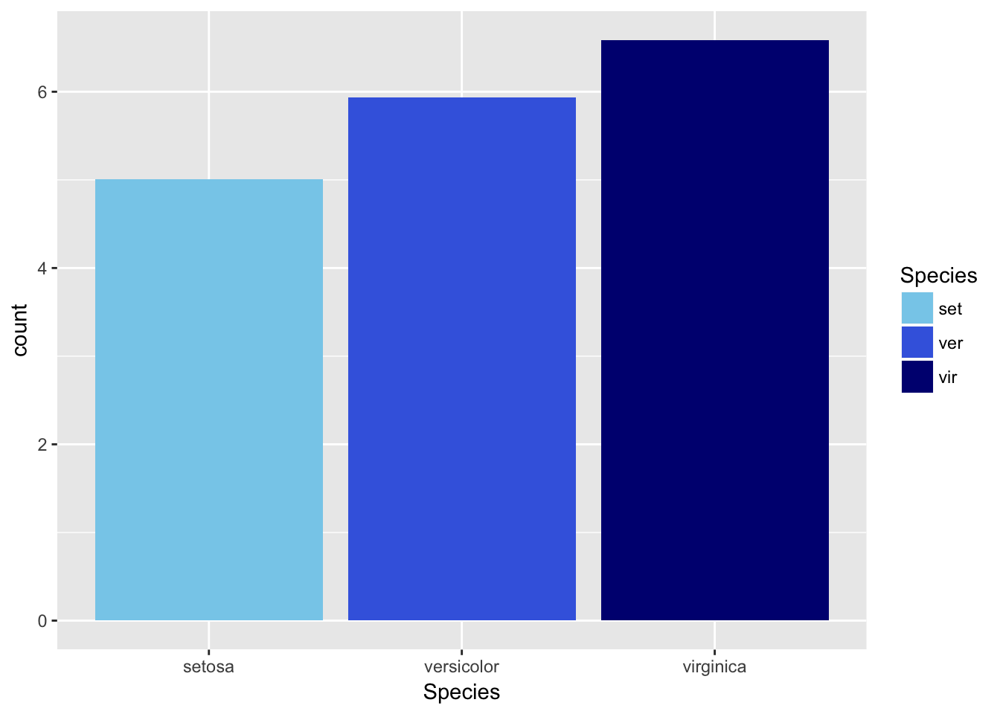

ggplot2入门指南
前言
ggplot2是R语言最流行的第三方扩展包，是RStudio首席科学家Hadley Wickham读博期间的作品，是R相比其他语言一个独领风骚的特点。包名中“gg”是grammar of graphics的简称，是一套优雅的绘图语法。Wickham Hadley将这套语法诠释如下：
一张统计图形就是从数据到几何对象（geometric object，缩写geom）的图形属性（aesthetic attribute，缩写aes）的一个映射。此外，图形中还可能包含数据的统计变换（statistical transformation，缩写stats），最后绘制在某个特定的坐标系（coordinate system，缩写coord）中，而分面（facet）则可以用来生成数据不同子集的图形。
这个解释读起来还是有点抽象，我们先抽取出ggplot2这门绘图语言提供的一组概念：
- 数据：data
- 统计变换：stats
- 几何对象：geom
- 图形属性：aes
- 标尺：scale
- 图层：layer
- 坐标系：coord
- 分面：facet
我们举个具体的例子来解读这些概念。假设现在我们要对一批连续取值的数据绘制直方图。首先，要定义清楚需要几个分组或者每个分组的区间，根据分组定义统计落在这个分组里的个数，这个步骤就是把data变为stats。然后，需要选定表达数据的几何对象，这个例子选用的是条块bar，这个步骤就是选geom。geom有一堆属性需要设定，比如x、y、颜色等，称为aes，哪个aes由哪个stats指定，需要指定一个映射关系mapping，即指定谁对谁。知道谁对谁后，还需要知道怎么个对法，需要由scale决定，比如stats的color字段取值为1应该对到什么颜色上，取值为2应该对到什么颜色上。这些完成了以后，统计图形的主体部分就成形了，但是假如我们希望在直方图上，再画一个概率密度曲线图，怎么办？ggplot2的思想非常精妙，把上面的主体部分称为一个图层layer，一个统计图形可以拥有多个图层，每个图层叠加起来形成我们要的效果。接下来，再选定一个坐标系统coord，一张统计图形plot就做好了。假如我们有多组数据，每组数据都要按照相同的方法画一张图，每张图重复敲代码很繁琐，就可以使用分面facet快速绘制多张统计图形。这个过程用图形总结如下：
我们可以看到ggplot2相比其他绘图系统的几个特性：
- 标准化：任何一个统计图形遵循相同的绘图流程，所以语法高度统一；
- 面向数据：上面的绘图流程只与数据有关，与数据无关的绘图细节封装在单独的
theme()方法里，数据相关绘图与数据无关绘图分离；
这两大特性解放了数据分析师的思维，做到绘图时所思即所见，非常优雅高效。下面我们来逐步剖析每个元素的内容。
数据
ggplot2接受的输入数据一般是data.frame，这是一个表格型结构，每一行是一个观测（observation），每一列是一个变量（variable）。R语言内置了许多著名的数据集，本文选取其中的iris进行讲解。iris中文名是鸢尾花，有四个属性，分别是Sepal.Length（花萼长度），Sepal.Width（花萼宽度），Petal.Length（花瓣长度），Petal.Width（花瓣宽度），以及一个类别标签Species。我在网上找了一个图片，做个标注，方便朋友理解。

我们可以使用str()查看数据集的结构，用summary()对每一个变量进行统计。
str(iris)## 'data.frame': 150 obs. of 5 variables:
## $ Sepal.Length: num 5.1 4.9 4.7 4.6 5 5.4 4.6 5 4.4 4.9 ...
## $ Sepal.Width : num 3.5 3 3.2 3.1 3.6 3.9 3.4 3.4 2.9 3.1 ...
## $ Petal.Length: num 1.4 1.4 1.3 1.5 1.4 1.7 1.4 1.5 1.4 1.5 ...
## $ Petal.Width : num 0.2 0.2 0.2 0.2 0.2 0.4 0.3 0.2 0.2 0.1 ...
## $ Species : Factor w/ 3 levels "setosa","versicolor",..: 1 1 1 1 1 1 1 1 1 1 ...summary(iris)## Sepal.Length Sepal.Width Petal.Length Petal.Width
## Min. :4.300 Min. :2.000 Min. :1.000 Min. :0.100
## 1st Qu.:5.100 1st Qu.:2.800 1st Qu.:1.600 1st Qu.:0.300
## Median :5.800 Median :3.000 Median :4.350 Median :1.300
## Mean :5.843 Mean :3.057 Mean :3.758 Mean :1.199
## 3rd Qu.:6.400 3rd Qu.:3.300 3rd Qu.:5.100 3rd Qu.:1.800
## Max. :7.900 Max. :4.400 Max. :6.900 Max. :2.500
## Species
## setosa :50
## versicolor:50
## virginica :50
##
##
## Hadley对data.frame提出了一个是否tidy的概念，抽象来讲就是一个变量必须有自己独立的一列，一个观测必须有自己独立的一行，每个取值必须有自己独立的一个单元格。为了便于理解，我们从R for Data Science这本书截取出这个图进行解释：
左边的数据是tidy的，右边的数据是不tidy的，通过另一个包tidyr可以轻松完成二者的转换。ggplot2的数据要求是tidy的。
几何对象、图形属性、图层
几何对象
几何对象，说的直观一些，就是你要画什么图来表示这组数据。ggplot2提供了众多几何对象geom_xyz()供大家选择。举两个常见的例子，geom_point()用于表示两个连续变量之间的关系，几何形状是点；geom_bar()用于表示x轴为离散变量，y轴为连续连续变量之间的关系，几何形状是条块。完整的几何对象请下载RStudio公司总结的ggplot2 cheetsheet。
几何对象有一个position选项，用于指定如何在空间内布置相同取值的集合对象。dodge为并排模式；fill为堆叠模式，并归一化为相同的高度；stack为纯粹的堆叠模式；jitter会在X和Y两个方向增加随机的扰动来防止对象之间的覆盖。
图形属性
每个几何对象都有自己的属性，这些属性的取值需要通过数据提供。数据与图形属性之间的映射关系称为mapping，在ggplot2中用aes()进行定义。常见的图形属性有：x，y，size，color，group。图形属性的任意一项都可以用数据的某一个变量来表示。
图层
ggplot2的绘图过程有点像Photoshop，有一个图层的理念，每个图层可以有自己的图形对象和图形属性，通过+将不同图层叠加起来生成最后的统计图形。如果将数据定义在ggplot()中，那么所有图层都可以共用这个数据；如果将数据定义在geom_xyz()中，那么这个数据就只供这个几何对象使用。
掌握了数据、几何对象、图形属性和图层的概念后，我们就可以开始绘制常见的统计图形了。
基本绘图
Kaggle数据挖掘竞赛里有一个经典的探索性分析例子，对iris数据集进行了各种形式的可视化，帮助人通过直观的图形更深地理解特征与label的关系。Kaggle官网给出了Python版本的实现。本节用R对该notebook的代码进行重现。
library(ggplot2)
# Make scatter plot of Sepal.Length and Sepal.Width
p.scatter <- ggplot(iris) + geom_point(aes(x=Sepal.Length, y=Sepal.Width))
p.scatter
# One piece of information missing in the plots above is what species each plant is
p.scatter <- ggplot(iris) + geom_point(aes(x=Sepal.Length, y=Sepal.Width, color=Species))
p.scatter
# Boxplot to explore numeric variable
p.box <- ggplot(iris) + geom_boxplot(aes(x=Species, y=Petal.Length))
p.box# One way we can extend this plot is adding a layer of individual points on top of it
p.box.jitter <- p.box + geom_jitter(aes(x=Species, y=Petal.Length))
p.box.jitter# A violin plot combines the benefits of the previous two plots and simplifies them
# Denser regions of the data are fatter, and sparser thiner in a violin plot
p.violin <- ggplot(iris) + geom_violin(aes(x=Species, y=Petal.Length))
p.violin# A final plot useful for looking at univariate relations is the kdeplot,
p.density <- ggplot(iris) + geom_density(aes(x=Petal.Length, colour=Species))
p.density分面与布局
分面，就是分组绘图，根据定义的规则，将数据分为多个子集，每个子集按照统一的规则单独制图，排布在一个页面上。ggplot2提供两种分面模式：facet_grid()和facet_wrap()。
我们先来看一下facet_grid()的效果。
library(tidyr)
library(dplyr)
# 将数据变为tidy的
tidy_iris <- iris %>%
gather(feature_name, feature_value, one_of(c("Sepal.Length", "Sepal.Width", "Petal.Length", "Petal.Width")))
p.box.facet <- ggplot(tidy_iris) + geom_boxplot(aes(x=Species, y=feature_value)) + facet_grid(feature_name~Species)
p.box.facet可以看到facet_grid()是一个二维的矩形布局，每个子集的位置由行位置变量~列位置变量的决定，在上面的例子中就是每一个Species的取值作为一行，每一个feature_name的取值作为一列。
再来看一下facet_wrap()的效果。
p.box.facet <- ggplot(tidy_iris) + geom_boxplot(aes(x=Species, y=feature_value)) + facet_wrap(~feature_name+Species, scales="free")
p.box.facetfacet_wrap()生成一个动态调整的一维布局，根据~位置变量1+位置变量2+...来确定每个子集的位置，先逐行排列，放不下了移动到下一行。scales="free"让每个子图的坐标系适合自己的数据，便于在有限的空间里充分展示子图的细节，但也失去了不同子图之间比较的作用，需要谨慎使用。
分面的特点是可以快速生成多个子图，每个子图的生成方式是一样的，因此只需要指定分组的规则即可。但是有时候我们希望绘制多个子图，每个子图的生成方法却不一样，这个时候分面就不起作用了，需要使用grid包提供的布局功能。下面我们用ggplot2和grid的布局实现一个较为复杂的统计图形效果：
library(grid)
# Show bivariate scatter plot and univariate histogram
p.hist.len <- ggplot(iris) + geom_histogram(aes(x=Sepal.Length))
p.hist.wid <- ggplot(iris) + geom_histogram(aes(x=Sepal.Width)) + coord_flip()
grid.newpage()
pushViewport(viewport(layout = grid.layout(3, 3)))
print(p.scatter, vp=viewport(layout.pos.row=2:3, layout.pos.col=1:2))
print(p.hist.len, vp=viewport(layout.pos.row=1, layout.pos.col=1:2))
print(p.hist.wid, vp=viewport(layout.pos.row=2:3, layout.pos.col=3))
在做数据分析时，我们经常需要观察变量自身与变量之间的两两关系。这个过程中需要绘制大量的图表，且每个业务的数据分析都需要这么做，因此算是一种重复性比较大的工作。我们可以使用GGally包来快速完成这个探索性分析的任务。
library(GGally)
# Another useful seaborn plot is the pairplot, which shows the bivariate relation
# between each pair of features
#
# From the pairplot, we'll see that the Iris-setosa species is separataed from the other
# two across all feature combinations
ggpairs(iris, aes(colour=Species), alpha=0.4) # R could be better!!
Kaggle数据挖掘竞赛剩下的例子是绘制Parallel coordinate graph、Andrews Curve、radviz，前两个的实现参考如下，最后一个暂时没找到对应的方法。
# Parallel coordinate graph & Andrews Curve
# 修改自：http://cos.name/2009/03/parallel-coordinates-and-andrews-curve/
# 轮廓图的思想非常简单、直观，它是在横坐标上取n个点，依次表示各个指标(即变量)；横坐标上则对应各个指标的值(或者经过标准化变换后的值)，然后将每一组数据对应的点依次连接即可
# 调和曲线图的思想和傅立叶变换十分相似：
# 根据三角变换方法将 n 维空间的点映射到二维平面上的曲线上，其中x取值范围为[-pi,pi]。
# Another multivariate visualization technique pandas has is parallel_coordinates
# Parallel coordinates plots each feature on a separate column & then draws lines
# connecting the features for each data sample
p.paral <- ggplot(cbind(iris %>% gather(feature_name, feature_value, one_of(c("Sepal.Length", "Sepal.Width", "Petal.Length", "Petal.Width"))), id=1:nrow(iris))) + geom_line(aes(x=feature_name, y=feature_value, group=id, colour=Species))
p.paral
# One cool more sophisticated technique pandas has available is called Andrews Curves
# Andrews Curves involve using attributes of samples as coefficients for Fourier series
# and then plotting these
andrews_curve <- function(data, x_col, y_col, step=pi/30){
x = as.matrix(data[, x_col])
t = seq(-pi, pi, pi/30)
m = nrow(x)
n = ncol(x)
f = matrix(0, m, length(t))
for(i in 1:m) {
f[i,] = x[i,1]/sqrt(2)
for(j in 2:n) {
if (j%%2 == 0)
f[i, ] = f[i, ] + x[i, j] * sin(j/2 * t)
else f[i, ] = f[i, ] + x[i, j] * cos(j%/%2 * t)
}
}
colnames(f) <- t
label <- data[, y_col]
id <- c(1:nrow(f))
res <- cbind(as.data.frame(f), label, id) %>%
gather(x, y, -label, -id, convert = TRUE)
}
iris.andrew <- andrews_curve(iris, x_col=c("Sepal.Length", "Sepal.Width", "Petal.Length", "Petal.Width"), y_col="Species")
p.andrew <- ggplot(iris.andrew) + geom_line(aes(x, y, group=id, color=label))
p.andrew# A final multivariate visualization technique pandas has is radviz
# Which puts each feature as a point on a 2D plane, and then simulates
# having each sample attached to those points through a spring weighted
# by the relative value for that feature
# 暂时没能力实现标尺
前面提到aes()设定了数据与图形属性的映射关系，但是数据怎么映射为属性，这就是标尺（Scales）的功能。对于任何一个图形属性，如x，y，alpha，color，fill，linetype，shape，size，ggplot2都提供以下四种标尺：
scale_*_continuous()：将数据的连续取值映射为图形属性的取值scale_*_discrete()：将数据的离散取值映射为图形属性的取值scale_*_identity()：使用数据的值作为图形属性的取值scale_*_mannual()：将数据的离散取值作为手工指定的图形属性的取值
举个例子
group_iris <- iris %>% group_by(Species) %>% dplyr::summarise(avg_sepal_length=mean(Sepal.Length))
str(group_iris)## Classes 'tbl_df', 'tbl' and 'data.frame': 3 obs. of 2 variables:
## $ Species : Factor w/ 3 levels "setosa","versicolor",..: 1 2 3
## $ avg_sepal_length: num 5.01 5.94 6.59p <- ggplot(group_iris) + geom_bar(aes(x=Species, weight=avg_sepal_length, fill=Species))
p
p + scale_fill_manual(
values = c("skyblue", "royalblue", "navy"), # mannual类scale特有的选项，指定图形属性的取值范围
limits = c("setosa", "versicolor", "virginica"), # 数据的取值范围
breaks = c("setosa", "versicolor", "virginica"), # 图例和轴要显示的分段点
name = "Species", # 图例和轴使用的名称
labels = c("set", "ver", "vir") # 图例使用的标签
)
除了上述四大类通用的标尺，特定的图形属性还有一些专门的标尺类型。对于x和y类图形属性，有如下几种特殊的标尺：
scale_x_date(labels=date_format("%m/%d"), breaks=date_breaks("2 weeks"))scale_x_datetime()scale_x_log10()scale_x_reverse()scale_x_sqrt()
对于color和fill类的图形属性，有如下几类特殊标尺：
scale_fill_brewer(palette="Blues")：根据调色盘生成颜色标尺，可用的调色盘可以通过RColorBrewer::display.brewer.all()命令查看；对于具体的一个调色盘，可以通过RColorBrewer::brewer.pal(n=4, name="Blues")查看具体某个名字调色盘的n个配色值。- `scale_fill_grey(start=0.2, end=0.8, na.value=“red”)：灰度标尺
scale_fill_gradient(low="red", high="yellow")：双色渐变标尺scale_fill_gradient2(low="red", high="blue", mid="white", midpoint=25)：三色渐变标尺scale_fill_gradientn(colours=terrain.colors(6))：n色渐标尺，其他的调色盘有rainbow()，heat.colors()，topo.colors()，cm.colors()以及RColorBrewer包的调色盘。
对于shape类的图形属性，我们可以手工指定形状：scale_shape_manual(values=c(3:7)。每个形状用数字表示，根据下图可以选择自己需要的形状。

坐标系
ggplot2默认的坐标系是笛卡尔坐标系，可以用如下方法指定取值范围：coord_cartesian(xlim=c(0,5), ylim=c(0,3))。如果想要让x轴和y轴换位置，比如将柱形图换成条形图，可以使用coord_flip()函数。coord_polar(theta="x", direction=1)是角度坐标系,theta指定角度对应的变量，start指定起点离12点钟方向的偏离值，direction若为1表示顺时针方向，若为-1表示逆时针方向。
主题
所有与数据不相关的图形控制细节都放在theme()这个函数里。ggplot2内置了一些常见的主题：theme_bw()，theme_classic()，theme_grey()，theme_minimal()。如果需要更多的主题可以安装ggthemes包，也可以自定义主题。
图例
ggplot2可以设定图例的位置：theme(legend.position="bottom")，其他选项有top、left和right。
每个图形属性都会有一个图例，图例的类型共有三种：colorbar为颜色条，适合连续变量；legend为键值对，适合有限取值的变量；none，将一个图形属性的图例设置为none，则不显示这个图形属性的图例。
标签
常用的绘图标签有：
ggtitle("New Plot Title")：指定图形名称xlab("New X label")：指定x轴标签ylab("New Y label")：指定y轴标签- 图例标签需要使用
scale_*()的name和labels选项进行指定